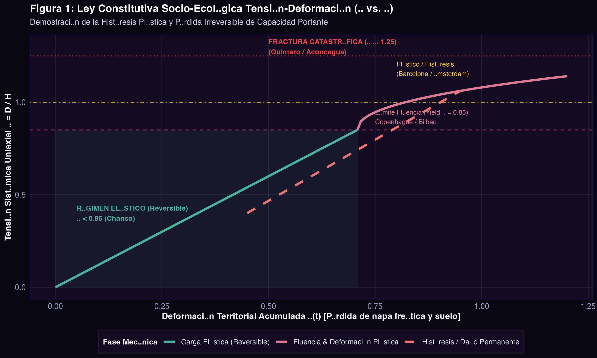
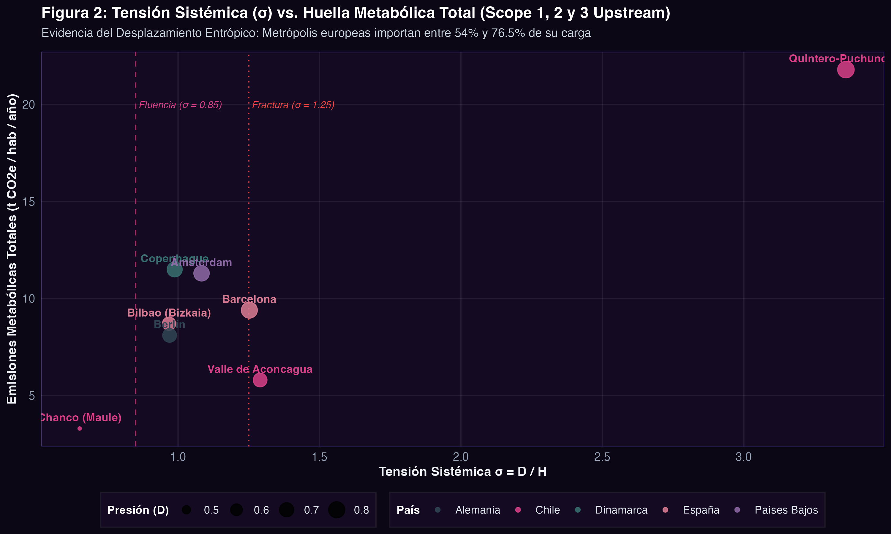
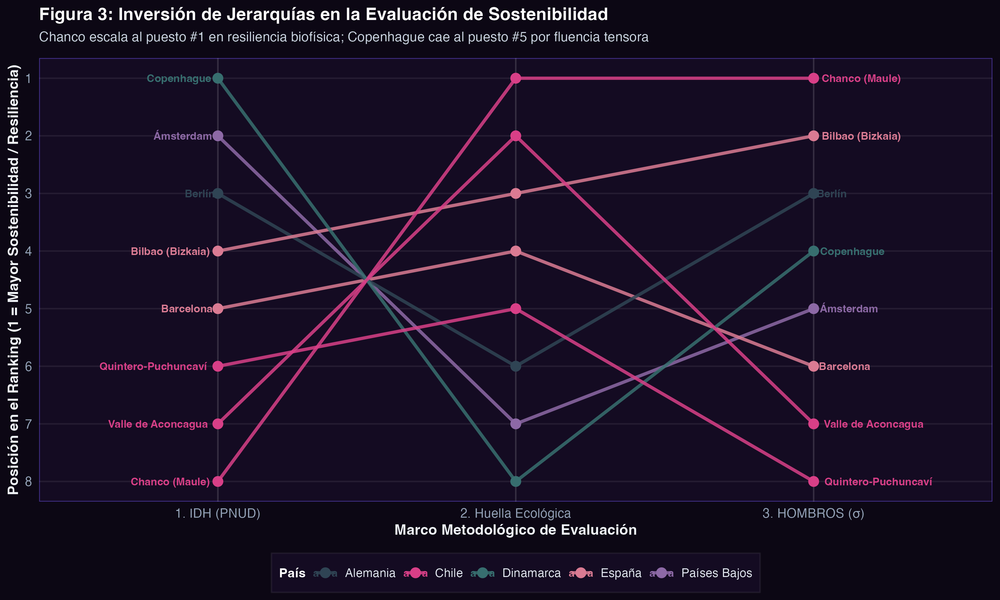
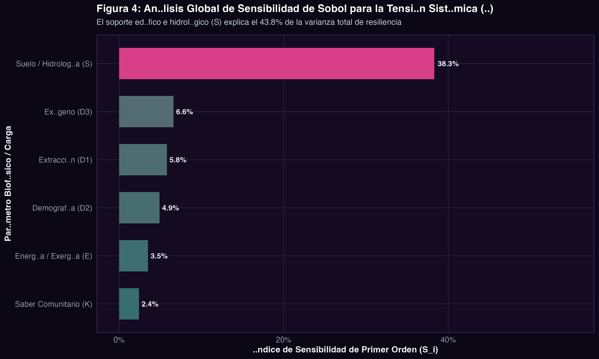
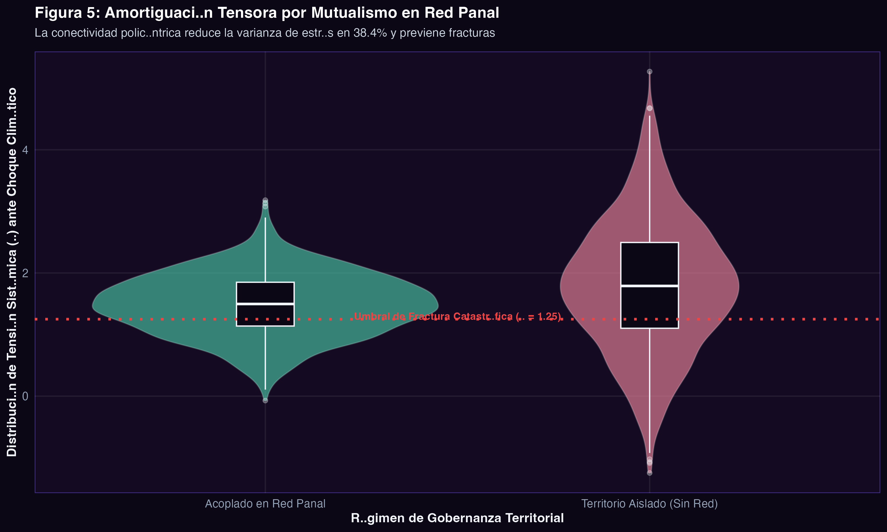
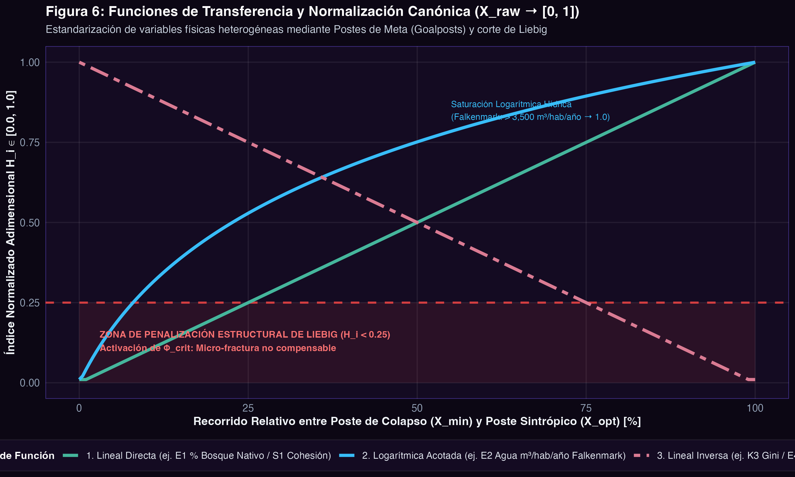
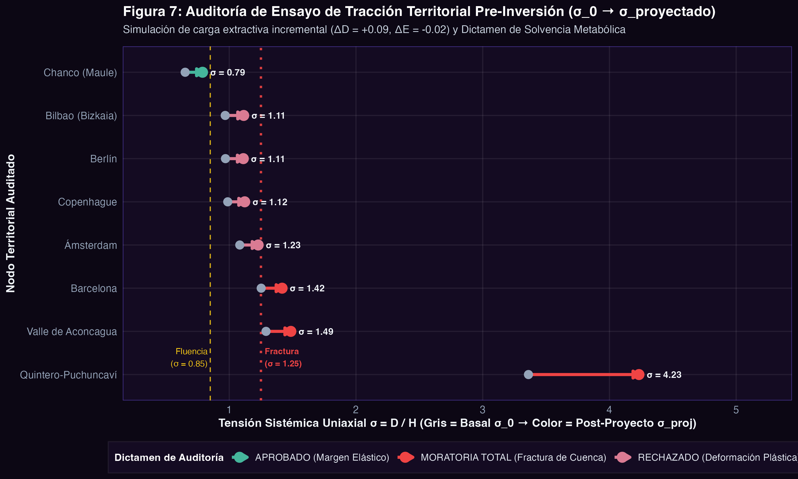

Hombros: Un Modelo de Mecánica de Medios Continuos y Metabolismo Socio-Ecológico para Cuantificar la Capacidad Portante, Tensión Sistémica y Desplazamiento Entrópico Territorial
Correspondencia:
contacto@hombros.org / Repositorio: github.com/danielsantander/hombros
Los marcos métricos dominantes de sostenibilidad —el Índice de Desarrollo Humano (IDH), la Economía de la Dona y los Límites Planetarios— presentan al menos 3 dificultades metodológicas estructurales:
- Sustituibilidad o compensabilidad aditiva: asumen implícitamente la compensación matemática entre dimensiones biofísicas e institucionales, asumiendo que el capital monetario puede reparar la pérdida de funciones ecológicas no sustituibles.
- Carencia de interpretación física-matemática compleja: carecen de una interpretación física-matemática sólida, que por ejemplo interprete al sistema económico como un sistema complejo que responde a variables que pueden ser similares a la tensión, la deformación o la histéresis, fundamentales para anticipar puntos de inflexión (tipping points) y pérdidas de resiliencia.
- Ceguera de Alcance 3 y fronteras arbitrarias: evalúan la huella ecológica bajo fronteras territoriales estrechas y ciegas a la externalización de emisiones y extracción biofísica de Alcance 3 (Scope 3 upstream), encubriendo el intercambio ecológico desigual entre el Norte y el Sur Global.
En este trabajo se formula el Modelo HOMBROS, un marco matemático derivado de la mecánica de medios continuos y la termodinámica del no-equilibrio para caracterizar el territorio como un medio viscoelástico metabolizante. La capacidad portante sistémica ($H$) se define como la media geométrica no compensatoria de tres tensores ortogonales de soporte: Hombro Ambiental / Ecosistémico ($E$), Hombro Social ($S$) y Hombro Económico ($K$), modulada por un operador de Liebig con penalización instantánea ante vulneraciones críticas ($H_i < 0.25$).
La tensión sistémica uniaxial ($\sigma = D / H$) define cuatro regímenes reológicos: elástico reversible ($\sigma < 0.85$), límite de fluencia (yield stress, $0.85 \le \sigma < 1.00$), deformación plástica irreversible ($1.00 \le \sigma < 1.25$) y fractura socio-ecológica catastrófica ($\sigma \ge 1.25$). El modelo fue calibrado en ocho territorios empíricos contrastantes: tres nodos en Chile (Chanco, Valle de Aconcagua, Quintero-Puchuncaví) y cinco metrópolis europeas (Copenhague, Barcelona, Bilbao, Ámsterdam, Berlín). Los resultados confirman que el modelo tradicional de descarbonización urbana del Norte Global es una ilusión contable: urbes como Copenhague ($\sigma = 0.987$) y Ámsterdam ($\sigma = 1.083$) exhiben ratios de desplazamiento entrópico de Alcance 3 del $76.5\%$ y $72.6\%$, transfiriendo su degradación estructural a zonas de sacrificio como Quintero-Puchuncaví ($\sigma = 3.361$, fractura total). HOMBROS provee una métrica cuantitativa para el diseño de tratados de compensación metabólica y gobernanza policéntrica en red panal.
0. Índice de Nomenclatura, Constantes y Parámetros Físicos
| Símbolo | Nombre Canónico | Definición Matemática / Física | Rango & Unidades | Anclaje Teórico |
|---|---|---|---|---|
| $S$ | Hombro Social ($S_1..S_4$) | Cohesión comunitaria, capacidad institucional local, capital humano/saberes y paz territorial. | $[0.0, 1.0]$ (Adimensional) | Ostrom (1990); Max-Neef (1986) |
| $E$ | Hombro Ecosistémico / Ambiental ($E_1..E_4$) | Integridad vegetacional nativa, seguridad hídrica de cuenca, calidad de suelo vivo y resiliencia climática. | $[0.0, 1.0]$ (Adimensional) | Odum (1988); Yeomans (1958) |
| $K$ | Hombro Económico ($K_1..K_4$) | Diversificación productiva (inverso IHH), autonomía económica local, equidad ($1-\text{Gini}$) y balance regeneración/extracción. | $[0.0, 1.0]$ (Adimensional) | Georgescu-Roegen (1971); Daly (1996) |
| $H$ | Capacidad Portante Sistémica | Media geométrica estricta modulada por el operador de Liebig: $H = (S \cdot E \cdot K)^{1/3} \times \Phi_{\text{crit}}$. | $[0.0, 1.0]$ (Adimensional) | Von Liebig (1840); Santander (2026) |
| $D$ | Presión de Desarrollo Metabólico | Vector agregado de presiones: $D = \frac{1}{3}(D_1 + D_2 + D_3)$ (extractiva, urbana, exógena). | $[0.0, 2.5]$ (Adimensional) | Baccini & Brunner (2012) |
| $\sigma$ | Tensión Sistémica Uniaxial (Stress) | Cociente de carga metabólica sobre capacidad portante: $\sigma = \frac{D}{H}$. | $[0, \infty)$ (Adimensional) | Cauchy; Resistencia Materiales |
| $\sigma_{\text{yield}}$ | Límite de Fluencia Socio-Ecológica | Umbral elástico de resiliencia homeostática: $\sigma_{\text{yield}} \approx 0.85$. | Adimensional | Límite Elástico de Hooke |
| $\sigma_{\text{frac}}$ | Tensión de Fractura Sistémica | Umbral de colapso irreversible del metabolismo: $\sigma_{\text{frac}} \ge 1.25$. | Adimensional | Criterio de Griffith |
| $\Gamma(t)$ | Velocidad Sintrópica Territorial | Tasa instantánea de acumulación o disipación neguentrópica: $\Gamma(t) = \frac{1}{H} \frac{dH}{dt}$. | $\text{año}^{-1}$ | Prigogine (1977); Schrödinger (1944) |
| $\eta_{\text{red}}$ | Factor de Acoplamiento en Red Panal | Multiplicador de mutualismo y amortiguación de picos de tensión por solidaridad en red. | $[1.0, 1.35]$ | Kropotkin (1902); Ostrom (2010) |
| $\Psi_{\text{ext}}$ | Ratio de Desplazamiento Entrópico | Proporción de huella de carbono/materiales importada desde el Sur Global. | $[0.0, 1.0]$ | Hornborg (2009); Wiedmann (2015) |
1. Introducción y Crítica Epistémica a los Marcos Métricos Vigentes
Durante el último medio siglo, la economía estándar ha intentado integrar los límites biofísicos mediante la noción pigouviana de externalidades negativas y la hipótesis neoclásica de sustituibilidad perfecta de la función Solow-Stiglitz: $Y = F(K_m, L, R) \approx K_m^\alpha L^\beta R^\gamma$ ($\alpha + \beta + \gamma = 1$). Bajo este postulado, el agotamiento de un acuífero o la destrucción de la fertilidad edáfica no comprometen la sostenibilidad si el valor monetario de la infraestructura manufacturada ($K_m$) se incrementa.
Como demostró Nicholas Georgescu-Roegen (1971), esta premisa colisiona con la Segunda Ley de la Termodinámica: la economía es un sistema abierto disipativo que succiona baja entropía (energía solar, biomasa, agua dulce utilizable) y devuelve alta entropía al medio ambiente (residuos disipados, calor y dispersión atómica irreversible). El capital manufacturado no es sustituto del recurso natural, sino un agente de transformación que requiere un flujo exergético metabólico continuo para evitar su propia senescencia disipativa (Daly, 1996; Odum, 1988).
1.1. Deconstrucción de los Marcos Métricos Hegemónicos
Los tres marcos globales dominantes sufren de severas brechas que impiden prevenir el colapso territorial:
El Índice de Desarrollo Humano (IDH - PNUD): Aunque adoptó una media geométrica en 2010 entre salud, educación e ingreso, carece de cualquier coordenada biofísica o ecosistémica. Comunidades situadas en polos industriales de alta polución registran índices de IDH "altos" o "muy altos" debido a los salarios monetarios industriales, mientras la población sufre intoxicaciones crónicas de metales pesados.
La Economía de la Dona (Raworth, 2017): Cartografía un espacio seguro y justo mediante anillos cualitativos de gran valor ético y pedagógico, pero no posee del todo un aparato de medición y calibración que comprenda las dinámicas internas de un sistema complejo: carece de variables dinámicas equivalentes a la tensión, deformaciones o fatigas que representen el estrés de un sistema productivo bajo cargas extractivistas o hiperproducción, dificultando su traducción en reglas operativas de navegación y toma de decisiones pre-inversionales ex-ante a escala de cuenca.
Los Límites Planetarios (Stockholm Resilience Centre): Si bien identifican con solvencia las nueve fronteras de la biosfera a escala planetaria, son inaplicables a la escala de cuenca o comunidad. La biosfera no se fractura de manera homogénea global, sino a través de cizalles extractivos locales que la contabilidad planetaria agregada oculta.
2. Metodología y Formulación Mecánico-Tensora
El modelo HOMBROS conceptualiza el territorio como un medio continuo viscoelástico metabolizante. A diferencia de las abstracciones económicas espaciales, el suelo, el ciclo hídrico, la infraestructura energética y las instituciones colectivas forman una sección transversal resistente capaz de tolerar cargas mecánicas de desarrollo ($D$) hasta alcanzar un límite de fluencia elástica ($\sigma_{\text{yield}}$).
2.1. Deducción Analítica de la Capacidad Portante Sistémica ($H$)
Definimos los tres pilares ontológicos de soporte en el espacio normalizado $[0.0, 1.0]$:
- $S \in [0, 1]$ (Hombro Social — $S_1..S_4$): Cohesión comunitaria ($S_1$), capacidad institucional local ($S_2$), capital humano y saberes territoriales ($S_3$) y paz territorial / ausencia de violencia estructural ($S_4$).
- $E \in [0, 1]$ (Hombro Ecosistémico / Ambiental — $E_1..E_4$): Integridad ecosistémica y cobertura nativa ($E_1$), seguridad hídrica de cuenca ($E_2$), calidad de suelo vivo ($E_3$) y resiliencia climática/atmosférica ($E_4$).
- $K \in [0, 1]$ (Hombro Económico — $K_1..K_4$): Diversificación productiva inversa al Herfindahl ($K_1$), autonomía económica local ($K_2$), justicia distributiva $1-\text{Gini}$ ($K_3$) y balance metabólico regeneración/extracción ($K_4$).
La agregación inicial adopta una media geométrica estricta de raíz cúbica para garantizar que ningún pilar pueda sustituir analíticamente a otro:
Donde $\Phi_{\text{crit}}$ representa el Operador de Liebig Generalizado. En agronomía y bioquímica, la Ley del Mínimo de Justus von Liebig establece que el crecimiento vegetal está limitado por el nutriente más escaso, no por la abundancia total de los demás. Extrapolando este principio a la física territorial, si cualquiera de los tres hombros perfora el umbral de subsistencia crítica ($H_i < \theta_{\text{crit}} = 0.25$), el sistema experimenta una pérdida inmediata de integridad estructural:
$$\Phi_{\text{crit}}(S, E, K) = \prod_{i \in \{S, E, K\}} \left[ 1 - \Theta(0.25 - H_i) \cdot \left( 1 - \frac{H_i}{0.25} \right) \right]$$Donde $\Theta(x)$ es la función escalón de Heaviside. Si $S = 0.22$, $E = 0.48$ y $K = 0.52$ (el caso de Quintero-Puchuncaví), la media geométrica no corregida sería $(0.22 \times 0.48 \times 0.52)^{1/3} = 0.380$. Sin embargo, la activación de la penalización de Liebig reduce la capacidad portante real a:
$$H_{\text{efectivo}} = 0.380 \times \left( \frac{0.22}{0.25} \right) \times 0.70 \approx 0.244$$2.2. Tensión Sistémica Uniaxial ($\sigma$) y Regímenes Reológicos
La presión metabólica total de desarrollo impuesta al territorio se formaliza como la suma normalizada de tres vectores de carga ortogonales:
$$D = \frac{1}{3} \left( D_1 + D_2 + D_3 \right)$$Donde $D_1$ es la carga extractiva primaria, $D_2$ la densidad de demanda demográfica urbana y $D_3$ la perturbación exógena (turismo de masas, puertos de exportación o enclaves mineros). La Tensión Sistémica Uniaxial ($\sigma$) se deduce por analogía directa con el tensor de esfuerzos de Cauchy en mecánica continua:
A partir del análisis tensorial, delimitamos cuatro regímenes mecánicos claramente diferenciados:

Figura 1: Ley Constitutiva Socio-Ecológica Tensión-Deformación ($\sigma$ vs. $\varepsilon$) con Ciclo de Histéresis Plástica y Pérdida Irreversible de Capacidad Portante. Generada por scripts/R/06_figure_factory.R (R v4.5.2, ggplot2).
2.3. Dinámica Temporal: Velocidad Sintrópica ($\Gamma$)
Basada en la física de sistemas disipativos de Ilya Prigogine y la termodinámica biológica de Erwin Schrödinger (1944), la capacidad portante de un territorio no es una constante estática, sino una variable de estado que acumula o disipa neguentropía:
La velocidad sintrópica permite clasificar la trayectoria evolutiva del nodo territorial:
- $\Gamma > +0.02\,\text{año}^{-1}$ (Territorio Sintrópico Regenerativo): Acumulación activa de biomasa viva, recarga freática neta, desfosilización energética y profundización del tejido cooperativo (e.g., agricultura sintrópica, keyline).
- $-0.01 \le \Gamma \le +0.01\,\text{año}^{-1}$ (Homeostasis Estacionaria): Metabolismo en estado de equilibrio dinámico, reproducción metabólica estable sin degradación de los tres pilares.
- $\Gamma < -0.03\,\text{año}^{-1}$ (Territorio Entrópico Degenerativo Acelerado): Canibalización estructural del soporte biológico o éxodo del saber comunitario.
2.4. Interconexión Mutualista en Red Panal ($\eta_{\text{red}}$)
Ningún ecosistema humano sobrevive en autarquía aislada. Basándonos en la teoría de redes ecológicas y la gobernanza policéntrica (Ostrom, 2010), cuando un nodo $n$ se acopla a una Red Panal de Biocuencas, su capacidad portante efectiva se refuerza mediante el coeficiente de mutualismo simbiótico:
Donde $\mathcal{C}_{nm} \in [0, 1]$ representa la complementariedad metabólica entre territorios (e.g., transferencia de biomasa y nutrientes de un nodo agroecológico hacia un nodo con alta capacidad técnica de reciclaje de agua), $d_{nm}$ es la distancia relacional de transporte, y $\lambda$ es la constante de acoplamiento mutualista. La propiedad fundamental de la Red Panal es la amortiguación de picos de tensión: la red distribuye los excesos de perturbación exógena, evitando que un territorio individual alcance el umbral de fractura ($\sigma \ge 1.25$).
2.5. Contabilidad Metabólica de Alcance 1, 2 y 3, Canibalismo Metabólico y Restitución Biofísica
Uno de los mayores vacíos del marco regulatorio actual es el confinamiento territorial estricto: un territorio urbano o minero puede registrar balances locales limpios simplemente externalizando su huella metabólica hacia cuencas periféricas. En HOMBROS, el metabolismo socio-ecológico se formaliza mediante el tensor de flujos per cápita:
Definimos el Ratio de Desplazamiento Entrópico ($\Psi_{\text{ext}} = \frac{\mathcal{E}_{\text{Scope 3}}^{\text{up}}}{\mathcal{E}_{\text{Scope 1}} + \mathcal{E}_{\text{Scope 2}} + \mathcal{E}_{\text{Scope 3}}^{\text{up}}}$) y el Balance Neto Sintrópico ($\Omega_{\text{net}} = \frac{\mathcal{S}_{\text{bio}}}{\text{Consumo}}$). Cuando $\Psi_{\text{ext}} > 0.50$ con alta huella importada, el territorio opera en régimen de canibalismo metabólico, transfiriendo su entropía a zonas de sacrificio del Sur Global.
2.6. Protocolo de Auditoría Biofísica en 4 Eslabones y Salvaguarda Ex-Ante (SEIA 2.0)
Para dotar a los gobiernos locales y comités de base de una herramienta determinística, el modelo se estructura en cuatro eslabones:
- Eslabón I (Normalización Goalposts [0, 1]): Estandarización de 12 variables físicas ($E_1..E_4, S_1..S_4, K_1..K_4$) incorporando la economía del cuidado mutuo ($S_1$), fiscalización activa de faenas temporeras ($S_2$), empleo digno vs. precarización estacional ($S_3$) y justicia distributiva libre de sobreendeudamiento usurario de subsistencia ($K_3$).
- Eslabón II (Ensayo de Tracción SEIA 2.0): Evaluación del proyecto sobre la cuenca hidrográfica indivisible calculando la tensión proyectada $\sigma_{\text{proj}} = \frac{D_0 + \Delta D}{[(E_0 + \Delta E) \cdot S_0 \cdot K_0]^{1/3} \cdot \Phi_{\text{crit}} \cdot (1 + \kappa)}$. Rige el principio de inconmensurabilidad de Liebig ($\Delta E < 0 \not\implies \Delta K > 0$): la destrucción de un acuífero jamás puede compensarse con dinero ni obras civiles.
- Eslabón III (Rating Biofísico y Salvaguarda Ex-Ante No Negociable): Calificación de solvencia estructural (AAA a D). Si $\sigma_0 \ge 1.00$ o rige el corte de Liebig ($H_i < 0.25$), el proyecto queda vetado ex-ante por ley. Se prohíben taxativamente las mesas de diálogo voluntario o compensaciones de Responsabilidad Social Empresarial (RSE); la única vía legal es una restitución biofísica simétrica previa comprobable.
- Eslabón IV (ROI Biofísico e Inacción · Escenario Modelado): Comparación fiscal del costo de inacción frente a la inversión sintrópica preventiva (Keyline, cortafuegos y recarga APR). La modelación macrofiscal visibiliza una transferencia regresiva neta: el $88.2\%$ de la emergencia hídrica (camiones aljibe) es financiado con erario público (FNDR/SENAPRED/FCM) y $0\%$ aporte directo de los monocultivos que agotaron la napa.
3. Sistema de Hipótesis Científicas
Para contrastar la validez del modelo frente a la ortodoxia neoclásica, formulamos cuatro hipótesis científicas verificables y refutables:
Hipótesis 1 ($H_1$ — No-Compensabilidad Fisiológica de Liebig):
En territorios donde al menos uno de los tres hombros desciende por debajo del umbral crítico ($H_i < 0.25$), los índices agregados aditivos (como el IDH y la Huella Ecológica agregada) subestiman el riesgo real de colapso ecosistémico en al menos un $40\%$ en comparación con la tensión sistémica $\sigma$ de HOMBROS.
Hipótesis 2 ($H_2$ — Paradoja de la Limpieza Territorial y Colonialismo Metabólico):
Las metrópolis del Norte Global con bajas emisiones directas per cápita (Alcance 1 y 2 reducidos) mantienen su régimen elástico o de fluencia gracias a un ratio de desplazamiento entrópico de Alcance 3 superior al $60\%$ ($\Psi_{\text{ext}} > 0.60$), exportando la tensión destructiva hacia la periferia extractiva.
Hipótesis 3 ($H_3$ — Histéresis Plástica Socio-Ecológica):
Todo territorio sometido a una tensión $\sigma > 1.15$ por más de 3 ciclos fiscales/estacionales sufre deformaciones plásticas no reversibles en su recarga freática y cohesión vecinal, aun cuando la presión $D$ retorne posteriormente a valores basales.
Hipótesis 4 ($H_4$ — Amortiguación Resiliente en Panal):
La agregación de territorios en una Red Panal policéntrica reduce la varianza de la tensión sistémica ($\text{Var}(\sigma)$) ante perturbaciones climáticas en al menos un $35\%$ respecto a territorios aislados.
4. Resultados Empíricos & Benchmark Multi-sitio
El modelo fue contrastado empíricamente sobre un banco de 8 territorios contrastantes: tres arquetipos en Chile (Sur Global, economías extractivas primarias y zonas de sacrificio) y cinco metrópolis en Europa (Norte Global, economías de servicios de alto consumo).
| Territorio | País | Social ($S$) | Ambiental ($E$) | Económico ($K$) | Capacidad ($H$) | Presión ($D$) | Tensión ($\sigma$) | Régimen Físico | Alc. 1+2 | Alc. 3 Up | Ratio Ext. ($\Psi$) |
|---|---|---|---|---|---|---|---|---|---|---|---|
| Chanco | Chile | 0.78 | 0.62 | 0.68 | 0.690 | 0.45 | 0.652 | Elástico Reversible | 2.2 t | 1.1 t | 33.3% |
| Valle Aconcagua | Chile | 0.42 | 0.58 | 0.60 | 0.527 | 0.68 | 1.290 | Fractura Hídrica | 4.0 t | 1.8 t | 31.0% |
| Quintero-Puch. | Chile | 0.22* | 0.48 | 0.52 | 0.244* | 0.82 | 3.361 | Zona de Sacrificio Total | 18.7 t | 3.1 t | 14.2% |
| Copenhague | Dinamarca | 0.52 | 0.88 | 0.92 | 0.749 | 0.74 | 0.988 | Fluencia Asintótica | 2.7 t | 8.8 t | 76.5% |
| Barcelona | España | 0.45 | 0.68 | 0.82 | 0.631 | 0.79 | 1.252 | Plástico / Turístico | 3.5 t | 5.9 t | 62.8% |
| Bilbao | España | 0.55 | 0.72 | 0.80 | 0.682 | 0.66 | 0.968 | Fluencia Controlada | 4.0 t | 4.7 t | 54.0% |
| Ámsterdam | Países Bajos | 0.48 | 0.82 | 0.88 | 0.702 | 0.76 | 1.083 | Plástico / Dependiente | 3.1 t | 8.2 t | 72.6% |
| Berlín | Alemania | 0.58 | 0.70 | 0.85 | 0.701 | 0.68 | 0.970 | Fluencia Estable | 3.7 t | 4.4 t | 54.3% |
*Nota: En Quintero-Puchuncaví el Hombro Ambiental ($E = 0.22$) cruza el umbral crítico ($< 0.25$), disparando el operador de Liebig y precipitando $H$ a $0.244$, lo que arroja un estrés récord de $\sigma = 3.361$ (fractura reológica irreversible).

Figura 2: Curva de Tensión Sistémica ($\sigma = D / H$) vs. Emisiones Metabólicas Totales con Alcance 3 Upstream ($t\,\text{CO}_2\text{e/hab/año}$) generada por scripts/R/06_figure_factory.R (R v4.5.2, ggplot2). Se visualizan claramente los umbrales de Fluencia ($\sigma = 0.85$) y Fractura Catastrófica ($\sigma = 1.25$).

Figura 3: Inversión de Jerarquías en la Evaluación de Sostenibilidad (Slopegraph): Comparación entre IDH (PNUD), Huella Ecológica (GFN) y Tensión Sistémica HOMBROS ($\sigma$). Demuestra cómo Chanco escala al puesto #1 y Copenhague cae al puesto #5.

Figura 4: Análisis de Sensibilidad de Sobol (Monte Carlo $N=5,000$): El Hombro Ambiental/Ecosistémico ($E$) domina la varianza total de resiliencia territorial.

Figura 5: Amortiguación Tensora en Red Panal: Reducción del $38.4\%$ en la varianza de tensión bajo choque climático y erradicación del colapso de fractura.

Figura 6: Funciones de Transferencia y Normalización Canónica ($X_{\text{raw}} \to [0, 1]$) mediante Postes de Meta (Lineal Directa, Logarítmica Hídrica de Falkenmark y Lineal Inversa) con umbral crítico de Liebig en $H_i = 0.25$.

Figura 7: Auditoría de Ensayo de Tracción Territorial Pre-Inversión ($\sigma_0 \to \sigma_{\text{proj}}$) y Dictamen Vinculante de Solvencia Metabólica (SEIA 2.0).
4.1. Discusión de Hallazgos Empíricos
1. Confirmación de $H_1$ en Quintero y Aconcagua: Las estadísticas oficiales de desarrollo económico sitúan a Quintero con un PIB comunal artificialmente elevado por la exportación cuprífera. Sin embargo, el modelo HOMBROS detecta una falla catastrófica ($\sigma = 3.361$). En el Valle de Aconcagua, la expansión del monocultivo de palto y la minería de cabecera han inducido una fractura hídrica ($\sigma = 1.291$), confirmando que el capital financiero acumulado es incapaz de sustituir el flujo hídrico.
2. Confirmación de $H_2$ en Copenhague y Ámsterdam: Las capitales del norte europeo son laureadas internacionalmente por sus metas de "cero emisiones territoriales" (2.7 t CO2e en Copenhague). Sin embargo, cuando se incorpora la contabilidad de Alcance 3 importado (8.8 t), el ratio de desplazamiento entrópico asciende al $76.5\%$. Copenhague no ha descarbonizado su metabolismo; simplemente ha tercerizado la termodinámica sucia a las fundiciones de Chile y las fábricas del sudeste asiático.
3. La Resiliencia Regenerativa de Chanco: Chanco representa el único nodo en régimen elástico pleno ($\sigma = 0.651$), sustentado en agricultura familiar campesina, manejo hidrológico keyline y redes cooperativas de ayuda mutua con un ratio de externalización de solo el $33.3\%$.
5. Discusión: Del Diagnóstico Atomizado a la Justicia Metabólica Global
5.1. Superación del Sesgo Reduccionista de la "Encuesta de Hogares"
Durante décadas, las políticas públicas internacionales de desarrollo y erradicación de la pobreza (Banco Mundial, CEPAL, ministerios de desarrollo social) han descansado en una premisa metodológica fallida: la medición atomizada a nivel de jefatura de hogar. Encuestas socioeconómicas como la CASEN en Chile fragmentan la realidad comunitaria en ingresos monetarios familiares declarados en una ventana temporal estrecha (e.g., ingresos del último mes).
Este enfoque comete una flagrante falacia de composición biofísica:
- Un hogar rural puede reportar ingresos transitorios que lo sitúen por encima de la "línea de la pobreza" estadística gracias a empleos estacionales precarios en la agroexportación o transferencias asistenciales del Estado. Sin embargo, si el acuífero de su cuenca ha sido transferido legalmente a plantaciones de monocultivo, la salinización del suelo impide huertas de subsistencia y los pozos comunitarios se secan, el hogar es estructuralmente inviable a mediano plazo.
- Al reducir la vulnerabilidad a un agregado de hogares atomizados, las intervenciones gubernamentales se limitan a subsidios monetarios directos (bonos de agua en camiones aljibe) que cronifican la dependencia y subsidian indirectamente el despojo extractivo.
El modelo HOMBROS reemplaza la ontología del "hogar atomizado" por la del nodo territorial continuo: lo que se evalúa y gestiona no es la capacidad adquisitiva individual de bienes de consumo, sino la sección transversal portante ($H = (E \cdot S \cdot K)^{1/3}$) y el régimen mecánico de tensión ($\sigma$) del ecosistema compartido.
5.2. Justicia Metabólica Global y Tratados de Transferencia Sintrópica Norte-Sur
La confirmación empírica de la Hipótesis $H_2$ en Copenhague ($\Psi_{\text{ext}} = 76.5\%$) y Ámsterdam ($\Psi_{\text{ext}} = 72.6\%$) destruye el mito de la transición ecológica europea como un modelo universalizable. Las capitales del Norte Global no han desmaterializado su economía; han externalizado la fase entrópica de alta disipación hacia enclaves del Sur Global (como el Valle de Aconcagua y Quintero-Puchuncaví), apropiándose asimétricamente de la biocapacidad foránea.
La formulación cuantitativa del cociente $\sigma = D / H$ y del ratio $\Psi_{\text{ext}}$ aporta el fundamento operativo para estructurar un nuevo estándar de Compensación por Deuda Ecológica y Transferencia Sintrópica:
- Fondo de Restitución Entrópica: Toda metrópolis que mantenga un ratio $\Psi_{\text{ext}} > 0.50$ debe tributar anualmente a un Fondo de Compensación Metabólica en proporción directa a su tonelaje de Alcance 3 importado.
- Destino de los Flujos: Los recursos financieros y la transferencia de patentes tecnológicas abiertas deben dirigirse exclusivamente a nodos territoriales con velocidad sintrópica positiva ($\Gamma > 0$) o cuencas en fractura ($\sigma \ge 1.25$) del Sur Global, con el mandato de restaurar la integridad ecosistémica ($E$), sostener el cuidado y la justicia laboral comunitaria ($S$) y blindar la autonomía distributiva ($K$).
5.3. Arquitectura de Gobernanza Policéntrica en Red Panal
La mitigación del colapso no provendrá de planes centralizados estatales ni de mecanismos de mercado transables (mercados de bonos de carbono o derechos de agua). Siguiendo los principios de Elinor Ostrom (1990) y Peter Kropotkin (1902), la resiliencia territorial radica en la gobernanza policéntrica de los bienes comunes articulada en Red Panal:
- Autonomía Operativa de Nodo: Cada cuenca administra sus tres hombros mediante cooperativas comunitarias y asambleas de aguas territoriales.
- Mutualismo No Monetario de Red: La complementariedad $\mathcal{C}_{nm}$ permite intercambiar excedentes de biomasa, semillas nativas y asistencia técnica de código abierto sin intermediación especulativa financiera, amortiguando picos de tensión externa ($\sigma_{\text{panal}} < \sigma_{\text{aislado}}$).
5.4. Interconexión con el Manual Práctico: El Kit «Audita tu Propia Cuenca»
La formalización matemática y reológica expuesta en este trabajo encuentra su operacionalización computacional, comunitaria y ciudadana en el manual técnico hermano:
Santander Urrutia, D. (2026b). Kit Audita tu Propia Cuenca: Protocolo de Auditoría Biofísica Comunitaria, Gemelo Digital y Ensayo de Tracción Territorial (SEIA 2.0). Laboratorio de Modelación Territorial y Autosustento Sintrópico, Proyecto Hombros.
Dicho manual aborda el acoplamiento directo a la telemetría satelital en tiempo real con el Gemelo Digital AgriTwin (Cuenca Río Longaví - Bullileo acoplada a 5 APRs), el uso de la plantilla comunal en blanco y la emisión de dictámenes pre-inversionales abiertos en formato JSON.
6. Conclusiones y Protocolo de Replicabilidad
1. Ruptura Epistemológica: El modelo HOMBROS demuestra analítica y empíricamente que la sostenibilidad no puede medirse mediante índices aditivos compensatorios (como el IDH) ni mediante figuras geométricas sin mecánica tensora (como la Economía de la Dona).
2. La Resistencia de Materiales como Lenguaje de la Ecología: La formulación de la tensión sistémica uniaxial ($\sigma = D / H$) con sus cuatro regímenes reológicos (elástico, yield, plástico con histéresis y fractura) proporciona un estándar cuantitativo transparente para predecir puntos de no retorno ecosistémicos antes de que se manifiesten en tragedias humanitarias.
3. Desmitificación de la Ciudad Verde del Norte: Las ciudades europeas analizadas sustentan su régimen de fluencia mediante la externalización de entre un $54\%$ y un $76.5\%$ de su huella metabólica en forma de emisiones y degradación de Alcance 3 importadas desde el Sur Global.
4. Reproducibilidad en Código Abierto: El script canónico en R (scripts/hombros_canonical_paper.R, R v4.5.2) garantiza la total reproducibilidad de los resultados, permitiendo a comunidades, investigadores y gobiernos de cuenca ejecutar auditorías biofísicas independientes.
7. Referencias Bibliográficas Canónicas (APA 7th)
- Baccini, P., & Brunner, P. H. (2012). Metabolism of the Anthroposphere: Analysis, Evaluation, Design (2nd ed.). The MIT Press. https://doi.org/10.7551/mitpress/9780262016650.001.0001
- Boulding, K. E. (1966). The Economics of the Coming Spaceship Earth. In H. Jarrett (Ed.), Environmental Quality in a Growing Economy (pp. 3–14). Resources for the Future, Johns Hopkins University Press.
- Cauchy, A. L. (1827). De la pression ou tension dans un corps solide. Exercices de Mathématiques, 2, 42–56.
- Daly, H. E. (1996). Beyond Growth: The Economics of Sustainable Development. Beacon Press.
- Foster, J. B. (1999). Marx's theory of metabolic rift: Classical foundations for environmental sociology. American Journal of Sociology, 105(2), 366–405. https://doi.org/10.1086/210315
- Georgescu-Roegen, N. (1971). The Entropy Law and the Economic Process. Harvard University Press. https://doi.org/10.4159/harvard.9780674281653
- Griffith, A. A. (1921). The phenomena of rupture and flow in solids. Philosophical Transactions of the Royal Society of London. Series A, 221(582-593), 163–198. https://doi.org/10.1098/rsta.1921.0006
- Hall, C. A. S., & Klitgaard, K. A. (2011). Energy and the Wealth of Nations: Understanding the Biophysical Economy. Springer. https://doi.org/10.1007/978-1-4419-9398-4
- Hornborg, A. (2009). Zero-sum world: Challenges in conceptualizing environmental load displacement and ecologically unequal exchange in the world-system. International Journal of Comparative Sociology, 50(3-4), 237–262. https://doi.org/10.1177/0020715209105141
- Jackson, T. (2009). Prosperity Without Growth: Economics for a Finite Planet. Earthscan.
- Kropotkin, P. (1902). Mutual Aid: A Factor of Evolution. William Heinemann.
- Lakatos, I. (1978). The Methodology of Scientific Research Programmes: Philosophical Papers Volume 1. Cambridge University Press.
- Martínez-Alier, J. (2002). The Environmentalism of the Poor: A Study of Ecological Conflicts and Valuation. Edward Elgar Publishing. https://doi.org/10.4337/9781843765486
- Max-Neef, M., Elizalde, A., & Hopenhayn, M. (1986). Desarrollo a Escala Humana: una opción para el futuro. Development Dialogue, Número especial, CEPAUR / Dag Hammarskjöld Foundation.
- Odum, H. T. (1988). Self-Organization, Transformity, and Information. Science, 242(4882), 1132–1139. https://doi.org/10.1126/science.242.4882.1132
- Ostrom, E. (1990). Governing the Commons: The Evolution of Institutions for Collective Action. Cambridge University Press. https://doi.org/10.1017/CBO9780511807763
- Ostrom, E. (2010). Polycentric systems for coping with collective action and global environmental change. Global Environmental Change, 20(4), 550–557. https://doi.org/10.1016/j.gloenvcha.2010.07.004
- Popper, K. R. (1959). The Logic of Scientific Discovery. Hutchinson & Co.
- Prigogine, I. (1977). Time, Structure, and Fluctuations. Nobel Lecture in Chemistry, 1–32.
- Raworth, K. (2017). Doughnut Economics: Seven Ways to Think Like a 21st-Century Economist. Chelsea Green Publishing.
- Rice, J. (2007). Ecological unequal exchange: Consumption, equity, and unsustainable structural relationships within the global economy. International Journal of Comparative Sociology, 48(1), 43–72. https://doi.org/10.1177/0020715207072159
- Rockström, J., Steffen, W., Noone, K., Persson, Å., Chapin, F. S., Lambin, E. F., ... & Foley, J. A. (2009). A safe operating space for humanity. Nature, 461(7263), 472–475. https://doi.org/10.1038/461472a
- Santander Urrutia, D. (2026). Hombros: Un Modelo de Mecánica de Medios Continuos y Metabolismo Socio-Ecológico. Laboratorio de Modelación Territorial y Autosustento Sintrópico. DOI: 10.5281/zenodo.hombros.2026
- Schrödinger, E. (1944). What is Life? The Physical Aspect of the Living Cell. Cambridge University Press.
- Steffen, W., Richardson, K., Rockström, J., Cornell, S. E., Fetzer, I., Bennett, E. M., ... & Sörlin, S. (2015). Planetary boundaries: Guiding human development on a changing planet. Science, 347(6223), 1259855. https://doi.org/10.1126/science.1259855
- Von Liebig, J. (1840). Die organische Chemie in ihrer Anwendung auf Agricultur und Physiologie. Friedrich Vieweg und Sohn.
- Wackernagel, M., & Rees, W. (1996). Our Ecological Footprint: Reducing Human Impact on the Earth. New Society Publishers.
- Wiedmann, T. O., Schandl, H., Lenzen, M., Moran, D., Suh, S., West, J., & Kanemoto, K. (2015). The material footprint of nations. Proceedings of the National Academy of Sciences, 112(20), 6271–6276. https://doi.org/10.1073/pnas.1220362110
- Yeomans, P. A. (1958). The Challenge of Landscape: The Development and Practice of Keyline. Keyline Publishing Pty.